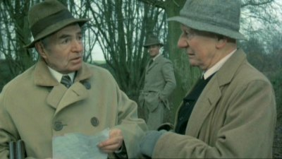

Saturday, February the 11th, 2012
back to: title, date or indexes

The picture above is a still from Alan Bridges' 1985 film The Shooting Party, based on Isobel Colegate's novel of 1981. James Mason plays Sir Randolph Nettleby, landowner, enthusiastic bird-shooter, and budding pamphleteer. John Gielgud's character is giving him some pamphleteering tips, having had his tract on animal rights printed by an “anarchist in Dorking”. Earlier, Gielgud has been marching about the field brandishing a placard in an attempt to disrupt the bird-shoot. Intriguingly, the name of Gielgud's character is Cornelius Cardew. Mere coincidence, or was Isobel Colegate gently teasing another upper class Englishman given to protest and to the brandishing of placards? And are there any other instances of fictional characters being given the names of English Maoist avant garde composers?